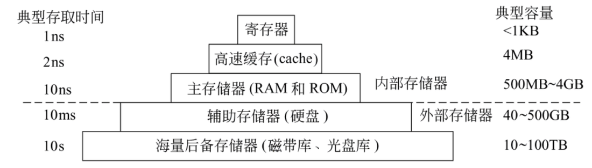
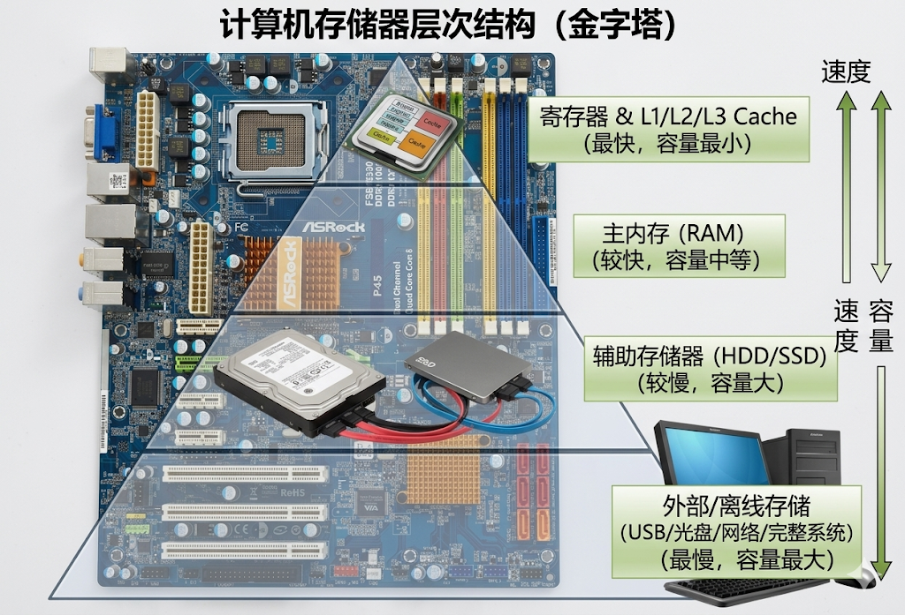
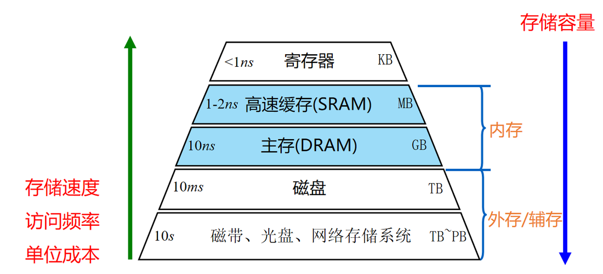
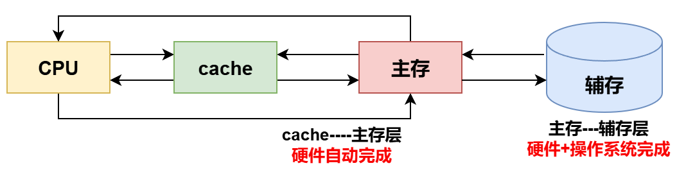
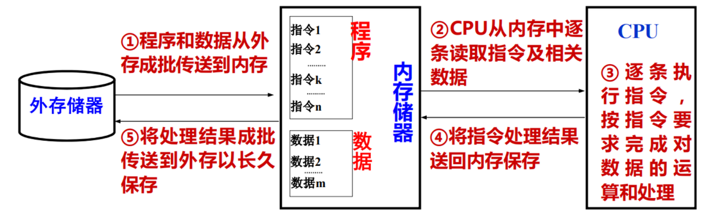

存储器的分类
存储器 | 按存储介质 | 按存取方式 | 按可改写性 | 按可保存性 | 按功能和存取速度 |
磁带 | 磁表面存储器 | 顺序存取 (SAM) | 读写存储器 | 非易失性 | 辅存 (外存) |
机械硬盘 (HDD) | 直接存取 (DAM) | ||||
光盘 (CD-ROM) | 光存储器 | 只读存储器 | |||
BIOS芯片 (ROM) | 半导体存储器 | 随机存取 | 主存 (ROM区) | ||
固态硬盘 (SSD)/Flash | 读写存储器 (电可擦除) | 辅存 (外存) | |||
CPU寄存器 | 读写存储器 | 易失性 | 寄存器存储器 | ||
快表(TLB)/全相联 Cache | 按内容访问 (CAM) | 高速缓存 | |||
Cache | 随机存取 (SRAM) | 高速缓冲存储器 | |||
内存 (RAM区) | 随机存取 (DRAM) | 主存 (内存) |
按功能/容量/读取速度/所在位置分类
- 寄存器存储器：它是由多个寄存器组成的存储器，如 CPU 内部的通用寄存器组，一般由几个或几十个寄存器组成，其字长一般与计算机字长相同，主要用来存放地址、数据及运算的中间结果，速度与CPU 匹配（快），容量很小。
- 高速缓冲存储器：简称
Cache；它位于主存和CPU之间，用来存放正在执行的程序段和数据，以便CPU能够高速地使用它们（用于缓冲 CPU 与慢速主存之间的性能差异，提高存储系统的访问速度）；用SRAM实现， 其读取速度可以和CPU相匹配，但存储容量小，价格高，目前会被集成在CPU当中。 - 主存储器MM(
Main Memory)：简称主存，又称内存；用来存放计算机运行期间所需的大量程序和数据；主要由DRAM实现， CPU可以直接对其进行访问，也可以和高速缓冲存储器（Cache）及辅助存储器交换数据；特点是容量较小，存储速度较快，造价高。（注意主存并不是单一的内存，还包括 BIOS、硬件端口等） - 辅助存储器：简称辅存，又称外存；是主存储器的后援存储器，用来存放当前暂时不用的程序和数据，以及一些需要永久性保存的信息，它不能与CPU直接交换信息；用磁盘、
SSD等实现，特点是容量极大，存储速度较慢，造价低

按照存储介质分类
存储元件必须具有两个截然不同的物理状态，才能被用来表示二进制代码0和1。目前使用的存储元件主要有半导体器件、磁性材料和光介质。
- 磁表面存储器：如磁盘、磁带等
注意：固态硬盘≠ 磁盘，传统的机械硬盘 HDD 才是磁盘，依靠磁盘盘片 +读写磁头完成读写；我们现在常用的固态硬盘(
Solid State Disk，SSD)，是基于闪存技术Flash Memory，属于电可擦除ROM，即EEPROM。
- 半导体存储器：分为
MOS型存储器（MOS型RAM又分为静态RAM(Static RAM,SRAM)和动态RAM(DynamicRAM,DRAM)）和双极型存储器两种，常见的半导体存储器有 BIOS、内存、寄存器、Cache、固态硬盘 SSD、ROM 芯片、RAM 芯片等。 - 光存储器：如只读光盘(CD-ROM)，和磁盘一样采用直接存取方式，只可读不可写。
关于 CD-ROM 的一些容易误解的地方
- 光盘和磁盘一样，磁头/光头可以先直接跳到目标数据所在的区域附近，然后再顺序查找具体的扇区，这种“先定位区域、再顺序查找”的模式属于直接存取（Direct Access / DAM）；
- CD-ROM 的全称是 Compact Disc Read-Only Memory（只读光盘）。它是在工厂生产线上通过物理模具“压制”出来的，数据被永久固化在盘面的凹坑中。用户买到手后绝对无法写入或修改数据。市面上能让用户自己刻录数据的光盘叫 CD-R（一次性写入）或 CD-RW（可重复擦写），它们不能被称为 CD-ROM
- CD-ROM 不属于 ROM，虽然它和所有的 ROM 一样，具备“非易失性”以及“只能读取数据”的属性，但是从计算机体系结构上看：不属于（或不能划等号）。 在硬件术语中，当我们单独讨论“ROM”时，通常有严格的限定条件：材质 专指半导体芯片（如 BIOS ROM、Flash ROM 等）；层级属于内存/主存的一部分，CPU 可以通过总线直接从中读取指令并执行。相反，CD-ROM 是光学介质，属于外存（辅存）， CPU 无法直接执行光盘里的程序，必须先将光盘里的数据读取到内存（RAM）中，CPU 才能进行处理。
按信息的可更改性分类
- 可读可写存储器(
Read/Write Memory)：读写存储器中的信息可以读出和写入，RAM芯片是一种读写存储器; - 只读存储器(
Read Only Memory)：只读存储器用ROM表示，ROM芯片中的信息一旦确定，通常情况下只读不写，但在某些情况下也可重新写入（如 E2PROM、Flash）。
按断电后信息的可保存性分类
- 易失性存储器：断电后，存储的信息会消失，如
RAM、Cache等 - 非易失性存储器：断电后，存储的信息仍然会保持，如
ROM、磁表面存储器、光存储器等
按存取方式分类
- 随机存取存储器(Random Access Memory，RAM)：特点是按地址访问存储单元，因为每个地址译码时间相同，所以，在不考虑芯片内部缓冲的前提下，每个单元的访问时间是一个常数，与地址无关。不过，现在的DRAM芯片内都具有行缓冲，因而有些数据可能因为已在缓冲而缩短了访问时间。
RAM又分为静态RAM（以触发器原理寄存信息）和动态RAM（以电容充电原理寄存信息） - 顺序存取存储器(Sequential Access Memory，SAM)：特点是信息按顺序存放和读出，其存取时间取决于信息存放位置，以记录块为单位编址。磁带存储器就是一种顺序存取存储器，其存储容量大，但存取速度慢。
- 直接存取存储器(Direct Access Memory，DAM)：存取方式兼有随机访问和顺序访问的特点。首先可直接选取所需信息所在区域，然后按顺序方式存取，磁盘存储器就是如此。
- 相联存储器
Associate Memory（AM）: 上述3类存储器都是按所需信息的地址来访问，但有些情况下可能不知道所访问信息的地址，只知道要访问信息的内容特征，此时，只能按内容检索到存储位置进行读写。这种存储器称为按内容访问存储器(Content Addressed Memory，CAM)或相联存储器(Associative Memory)。例如，快表就是一种相联存储器。
ROM 和 RAM 一样，都是随机存取存储器吗?
答：是的。虽然经常把只读存储器(ROM)和随机访问存储器(RAM)放在一起进行分类，但ROM的存取方式和RAM是一样的，都是通过对地址进行译码，选择某个单元进行读写。所以两者采用的都是随机存取方式。不过，在程序执行过程中，ROM存储区只能读出信息，不能修改，而RAM区可以读出，也可以修改信息。
存储器的主要性能指标
- 存储器容量：存储器可以存储的二进制信息总量（或者说包含的存储单元的总数）；若存储器按字节编址，那么一个存储单元为 1 个字节（bit），128B 表示该存储器有 128 个存储单元。
- 存取时间 (Access Time,
 )
)
定义： 启动一次存储器操作（读或写分别对应取与存）到该操作真正完成所经历的时间。注意读写时间可能不同，DRAM 读慢写快、闪存读快写慢。
具体到读写操作，它的衡量起点和终点如下：
- 读出时间（Read Access Time）： 从存储器接收到有效的地址和读命令开始，直到从存储介质中将数据读出，并稳定地送到存储器的数据总线上为止的时间。
- 写入时间（Write Access Time）： 从存储器接收到有效的地址、数据和写命令开始，直到数据被可靠地写入到指定的存储单元中为止的时间。
核心特征： 存取时间只关注“单次操作”的耗时，它衡量的是存储器阵列本身寻址、信号放大和数据传输的纯粹物理延迟。
- 存取周期 (Memory Cycle Time, )
严格定义： 存储器进行两次独立的、连续的存取操作之间所需的最小时间间隔。
核心特征： 存取周期关注的是存储器的“吞吐率”或“连续工作能力”。它不仅仅包含了一次读或写的时间，还包含了让存储器“缓过神来”准备下一次操作的时间。
为什么 存取周期 > 存取时间？
它们之间的数学关系可以严格表示为： ；其中， 被称为恢复时间（Recovery Time）。
；其中， 被称为恢复时间（Recovery Time）。
存储器在完成一次存取操作后，其内部的物理电路并不能立刻无缝衔接处理下一个请求，而是需要一段“恢复”和“复位”的时间。导致这种现象的原因包括：
- 破坏性读出（如 DRAM）： DRAM的读取是破坏性的。读出数据后，原存储单元内的电荷会被释放掉。因此，在读出操作完成后，存储器内部必须强制执行一个“重写”操作，把数据写回去并让位线电压复位，这段时间就是典型的恢复时间。
- 电路延迟： 地址译码器、读写控制逻辑等内部电路在电平翻转后，需要一定时间才能稳定回初始状态，以防止下一次操作出现信号干扰。
存取时间决定了 CPU 请求一次数据需要等多久（单次响应速度）；而存取周期决定了 CPU 每秒钟最多能向内存发多少次请求（整体带宽上限）。在现代计算机系统中，尤其是对于主存（DRAM）而言，存取周期永远大于存取时间。
- 存储器带宽：单位时间内存储器所能传输（存入或读出）的连续最大数据量。
它是衡量存储系统整体数据传输能力的最关键指标，通常以 字节/秒（B/s）、兆字节/秒（MB/s）或 吉字节/秒（GB/s）为单位。它的理论计算公式为：
- ：存储器带宽 (Memory Bandwidth)。
- ：存储器的数据位宽或数据总线宽度。这代表在一次存取周期内，内存能够同时送出或接收的数据位数（通常在计算时会除以 8 转换为字节 Byte）。
- ：存取周期 (Memory Cycle Time)。
从上述公式可以看出，要提升存储器的带宽，通常依赖以下两个核心路径：
- 缩短存取周期（减小 ）
这等同于提高存储器的工作频率（频率是周期的倒数）。例如，每一代内存条的更迭（从 DDR3 到 DDR4，再到 DDR5），其核心进步之一就是通过改进电气特性和预取技术，大幅提高了等效工作频率，从而缩短了连续传输的周期时间。 - 增加数据位宽（增大 ）
这等同于拓宽数据传输的“车道”。在现代计算机系统中，最典型的应用就是双通道或四通道内存技术。（例如单根内存条的物理位宽是 64 bit（8 字节），当你在主板上组建双通道时，CPU 的内存控制器会同时并行操作两根内存，将位宽翻倍扩展至 128 bit（16 字节）。在存取周期不变的情况下，理论带宽直接翻倍）
如果将数据传输比作供水系统：
- 存取时间 (Access Time)： 是你拧开水龙头后，等待“第一滴水”流出来所需的时间（单次延迟）。
- 存取周期 (Cycle Time)： 是水龙头连续开关两次之间所必须等待的最短时间。
- 存储器带宽 (Bandwidth)： 是结合了水管的“粗细”（位宽）和连续供水能力（周期）之后，在一秒钟内总共能流出的“总水量”。
存储器的层次化结构
为什么需要层次化结构？
- 核心矛盾： 人们理想中的存储器需要同时具备“容量大、速度快、成本低”的特点，但现有的技术无法让单一存储器同时满足这三点（例如 SRAM 快但贵且容量小，磁盘容量大且便宜但慢）。
- 性能鸿沟： 过去几十年，CPU 处理器性能的提升速度远超存储器访问速度的提升，导致 CPU 经常需要等待数据的存取。
- 解决思路： 利用程序的局部性原理，将不同速度、容量、成本的存储设备有机组合成金字塔结构，使得整个存储系统的“速度接近最高层，容量和单位成本接近最低层”。
存储器的“金字塔”结构
存储系统从上到下一般由 5 级构成，整体呈现金字塔形。


- 四大规律： 从上至下（越远离 CPU），访问速度越慢、存储容量越大、单位字节价格越低、被 CPU 访问的频次越低。
- 内外存划分： 寄存器、Cache、主存统称为内部存储器（内存），CPU 可直接访问；辅存及以下统称为外部存储器（外存），其信息必须先调入主存才能被 CPU 访问。
两个关键的存储层次
现代计算机主要通过构建两个层次来全面优化存储系统：

- ① Cache - 主存层次
- 主要目的： 缓解 CPU 与主存速度不匹配的问题。
- 实现方式： 数据调度完全由硬件自动完成。
- 透明性： 对所有程序员（包括系统程序员和应用程序员）都是透明的（即程序员无需关心其内部数据调度逻辑）。
- ② 主存 - 辅存层次
- 主要目的： 解决存储系统的容量不足问题（逐渐发展形成了虚拟存储系统，让程序员可以使用远大于实际主存的虚拟地址空间进行编程）。
- 实现方式： 由硬件和操作系统共同完成。
- 透明性： 对应用程序员透明，但对系统程序员不透明（系统程序员需要编写调度等底层逻辑）。

⭐Cache-主存层次与主存-辅存层次的异同点
一、 两个层次的相同点
这两个层次在工作原理和管理机制上有以下核心共性：
- 理论基础： 都是基于程序访问的局部性特点，将相邻的局部信息从慢速存储器复制到快速存储器中。
- 需要解决映射问题： 都必须考虑慢速存储器和快速存储器之间的地址映射关系。
- 需要解决替换问题： 当快速存储器已满，且需要装入新块时，都需要考虑替换策略（把哪一块替换出去）。
- 缺失时的调入机制： 当在快速存储器中找不到所需信息（缺失）时，都需要从慢速存储器中将包含该信息的块调入到快速存储器中。
二、 两个层次的不同点
由于所处位置和引入目的不同，两者在具体实现上存在显著差异：
对比维度 | Cache - 主存层次 | 主存 - 辅存层次 |
位置与访问权限 | 最靠近 CPU。CPU 可直接访问 Cache 和主存。 | 远离 CPU。CPU 不能直接访问辅存，辅存需与主存直接交换数据。 |
引入目的 | 解决速度问题：加快 CPU 访问信息的速度。 | 解决容量问题：采用虚拟存储器机制，扩大系统的存储容量，使编程不受内存大小限制。 |
交换的数据单位 | 称为主存块 (Block)，通常较小，一般为 8 ~ 128B。 | 称为页 (Page)，通常较大，一般为 4KB ~ 64KB（因缺页损失远大于 Cache 缺失，页太小会降低效率）。 |
缺失处理 | 由处理器（硬件）直接实现。 | 由操作系统（软件）实现。 |
映射方式 | 可灵活选择直接映射、全相联映射或组相联映射。 | 均采用全相联映射方式。 |
映射的实现介质 | 映射关系完全由硬件实现，使用 Cache 行中的标志 (Tag) 字段描述。 | 映射关系由操作系统实现，使用页表来描述。 |
写策略 | 可以采用直写 (Write-through) 和 回写 (Write-back) 两种策略。 | 都采用回写 (Write-back) 策略（因为直接写磁盘的开销过大，无法容忍直写策略）。 |
数据的访问与调度规则
- 子集副本原则： 上一层的内容始终是下一层内容的子集（副本）。即 Cache 中的数据一定也在主存中，主存中的数据一定也在辅存中。
- 逐层查找原则： 当 CPU 执行指令需要数据时，遵循 寄存器 -> Cache -> 主存 -> 辅存 的顺序逐级查找。
- 如果 Cache 未命中，则访问主存；主存没有，则访问辅存。
- 数据调入规则： 数据一般只在相邻两层之间复制传送，且传送单位通常是定长块（Block）。
- 如果数据在辅存被找到，它不能直接送给 CPU，而是需要：从辅存读出 -> 送到主存 -> 从主存送到 Cache -> 送到寄存器/CPU。
- 直接交互特例： 主存作为枢纽，不仅与 Cache 和辅存交换数据，CPU 也可以和主存直接交换信息。
习题演练
- 【2010-16】下列有关RAM和ROM的叙述中，正确的是（ ）。
Ⅰ. RAM是易失性存储器，ROM是非易失性存储器
Ⅱ. RAM和ROM都采用随机存取方式进行信息访问
Ⅲ. RAM和ROM都可用作Cache
Ⅳ. RAM和ROM都需要进行刷新
A. 仅Ⅰ和Ⅱ
B. 仅Ⅱ和Ⅲ
C. 仅Ⅰ、Ⅱ和Ⅳ
D. 仅Ⅱ、Ⅲ和Ⅳ
解析
答案选 B
解答：
I正确，II正确，不再解释。
在实际应用中，通常使用高速RAM作为Cache，而不使用ROM。III错误。
RAM需要定期进行刷新，以防止数据丢失。这是由于RAM采用了电容来存储数据，而电容会逐渐失去电荷，需要定期重新充电。ROM不需要刷新，因为它使用了固化的存储技术，数据是永久保存的。IV错误。
综上，I和II正确。
本题选A。
- 【2011-14】下列各类存储器中，不采用随机存取方式的是（ ）。
A. EPROM
B. CDROM
C. DRAM
D. SRAM
解析
答案选 B
CDROM 采用直接存取方式，注意 CD-ROM 不是 ROM，ROM 特指只读属性的半导体存储器，CDROM 属于光存储器。
- （袁书配套习题）下面有关 ROM 和 RAM 的叙述中，错误的是( )
A. RAM 是可读可写存储器，ROM 是只读存储器
B. ROM 和 RAM 都采用随机访问方式进行读写
C. 系统的主存由 RAM 和 ROM 组成
D. 系统的主存都用 DRAM 芯片实现
解析
答案选 D
A是正确的： RAM（随机存储器）正常工作时可以随时读写；ROM（只读存储器）在正常工作时只能读出数据。
B是正确的： 这里的“随机访问方式”（Random Access）指的是存取时间与存储单元的物理位置无关。RAM和ROM在读取数据时，都可以直接按地址访问任意一个存储单元，且花费的时间相同，所以它们都属于随机存取方式。（这说法稍有瑕疵，一般来说ROM存储区只能读出信息，不能修改，因此RAM和ROM都采用随机存取方式进行信息访问这种真题的描述更为合适）
C是正确的： 计算机的主存（内存）实际上是由RAM和ROM共同组成的。RAM占据了主存的绝大部分，用于存放运行中的程序和数据；而ROM通常用于存放系统启动和底层的BIOS程序。
D是错误的： 通用 PC 系统的主存由 RAM 区和 ROM 区组成，其中 RAM 区一般都用 DRAM 芯片实现，ROM 区则用相应的 ROM 存储元件实现。有些嵌入式专用系统可能其主存都是由 ROM 存储元件实现，还有些系统也会用 SRAM 芯片实现内存，所以，并不是所有系统的内存都是由 DRAM 芯片实现的。答案为选项 D。
- （袁书配套习题）下面有关半导体存储器的叙述中，错误的是( )。
A. 半导体存储器都采用随机存取方式进行读写
B. ROM 芯片属于半导体随机存储器芯片
C. SRAM 是半导体静态随机访问存储器，可用作 cache
D. DRAM 是半导体动态随机访问存储器，可用作主存
解析
答案选 A
A是错误的： 有些半导体存储器可以采用按内容访问方式。例如，全相联映射的 cache 就是根据标志信息(Tag)来访问的。因此，选项 A 的说法是错误的。
B 正确；
C是正确的： SRAM（静态随机存储器）存取速度快，但集成度低、功耗大、成本高，通常用来制作计算机的高速缓存（Cache）。
D是正确的： DRAM（动态随机存储器）集成度高、容量大、成本较低，但速度比SRAM慢，且需要定期刷新，通常用来制作计算机的主存。
- 【2024-16】对于页式虚拟存储管理系统，下列关于存储器层次结构的叙述中，错误的是
A. Cache-主存层次的交换单位为主存块，主存-外存层次交换单位为页
B. Cache-主存层次替换算法由硬件实现，主存-外存层次替换算法由软件实现
C. Cache-主存层次可采用回写法写策略，主存-外存层次通常采用回写法写策略
D. Cache-主存层次可采用直接映射方式，主存-外存层次通常采用直接映射方式
解析
答案选 D
- D 选项错误。 Cache-主存层次确实可以采用直接映射方式（也可以是全相联或组相联），但是主存-外存层次（虚拟存储系统）通常采用的是全相联映射方式，而不是直接映射方式。因为外存（磁盘）的读取速度极慢，发生缺页的代价极其惨重，为了尽最大可能消除“冲突缺失”、提高命中率，系统允许将外存中的任何一页调入主存中的任何一个空闲页框内（即全相联）。
其他选项分析（均为正确叙述）：
- A 选项正确： Cache 与主存之间的数据交换是以“块（Block）”为单位的（通常几十字节）；而主存与外存之间的数据交换是以“页（Page）”为单位的（通常几KB到几十KB）。
- B 选项正确： Cache 为了追求极致的速度，其映射、替换等所有操作均由硬件逻辑直接实现；而主存-外存层次的缺页处理、页面替换等操作，是由操作系统的存储管理模块（软件）结合页表来实现的。
- C 选项正确： Cache-主存层次的写策略可以是直写（Write-through）或回写（Write-back）；但在主存-外存层次，由于每次访问磁盘的开销巨大，系统绝不可能在每次修改主存时都同步去写磁盘（直写），因此必然采用回写策略，即只在页面被替换出主存时才将其写回磁盘。
为什么主存-辅存必须用“全相联”？ 为什么 Cache 不全用全相联？
1. 什么是主存-辅存的“全相联映射”？
在虚拟存储器中，逻辑空间被划分为大小相等的“页”，物理主存被划分为同样大小的“页框”。全相联映射即 辅存（硬盘）中的任何一个页，都可以被灵活地装入到主存中的任何一个空闲的页框里。它们之间没有任何位置上的“强制绑定”关系。
可以用“停车场”来形象地理解：
- 直接映射（Cache常用）： 你的车牌号尾数是5，你就只能停在5号车位。如果5号车位有人了，即使整个停车场其他几百个车位全空着，你也得把5号车位那辆车赶走才能停进去。（这叫冲突缺失，命中率低）。
- 全相联映射（主存-辅存采用）： 你可以把车停在停车场的任何一个空闲车位。只有当整个停车场彻底爆满时，你才需要考虑赶走一辆车（替换）。
2. 为什么主存-辅存必须用“全相”？
核心原因有以下三点：
① 硬盘太慢了，缺页代价极其惨重，这是最根本的原因。
- CPU 访问主存的速度是纳秒级 (ns)。
- CPU 访问硬盘（辅存）的速度是毫秒级 (ms)。
两者相差了数十万甚至上百万倍。如果在主存中找不到需要的数据（发生“缺页”），系统就不得不去读硬盘，这会导致 CPU 被迫停顿漫长的时间。因此，主存-辅存层次设计的最高优先级目标就是：不择手段地提高命中率，尽一切可能避免去读硬盘。
② 全相联能提供最高的命中率
正如上面停车场的例子，如果在这个层次使用“直接映射”或“组相联映射”，就会发生“冲突缺失”——主存明明还有大量空闲空间，却因为位置限制不得不把有用的数据踢回硬盘。采用全相联映射，只要主存没被完全塞满，就绝对不会发生替换操作。这就彻底消除了“冲突缺失”，从而最大化了主存的命中率。
③ 靠操作系统（软件）实现，有条件做全相联
你可能会问：既然全相联这么好，为什么 Cache 不全用全相联？
- Cache 的无奈： Cache 是为了匹配 CPU 的极速，它的地址转换必须在 1~2 个时钟周期内靠纯硬件电路完成。如果 Cache 做成全相联，意味着硬件要在瞬间同时把目标地址和 Cache 中所有行的地址进行比对，这种极其复杂的比较器电路成本太高，且延迟很大，所以 Cache 只能妥协，多用组相联。
- 主存-辅存的优势： 主存-辅存的映射和缺页处理是由操作系统（软件）结合数据结构（页表 Page Table）来实现的。软件查表是非常灵活的，记录“任意页对应任意页框”的映射关系轻而易举。虽然软件查表、更新页表比起纯硬件耗时更长，但是与读取硬盘那漫长的毫秒级时间相比，这点软件处理的开销简直微不足道。
总结
主存-辅存层次采用全相联映射，是典型的“用空间和软件管理的复杂度，去换取宝贵的磁盘 I/O 时间”的权衡结果。因为在这里，哪怕能减少 1% 的缺页率，带来的性能提升都是巨大的。
- （原创题）某计算机的主存存取周期为 50 ns，存取时间为 40 ns，数据总线宽度为 64 位。若不考虑其他开销，该主存的最大理论带宽是多少？
A. 200 MB/s
B. 160 MB/s
C. 1280 MB/s
D. 1.28 GB/s
解析
正确答案：B
解析： 存储器带宽衡量的是连续传输数据的能力。由于存储器在一次存取后需要恢复时间（），所以连续访问的最小时间间隔是存取周期（50 ns），而不是存取时间（40 ns）。题干中的“存取时间为 40 ns”是迷惑信息。
计算过程：存储器带宽公式为：
数据位宽
存取周期
带宽 。
因此选 B。
- （袁书配套习题）在主存和 CPU 之间增加 cache 的目的是( )。
A. 增加内存容量
B. 提高内存可靠性
C. 加快信息访问速度
D. 增加内存容量,同时加快访问速度
解析
答案：C.
解析：
- Cache-主存层次的核心目的是为了缓解 CPU 和主存之间速度不匹配的矛盾，利用局部性原理将 CPU 最常访问的数据放在速度极快的 Cache 中，从而加快信息的整体访问速度。
- 选项 A 和 D 中提到的“增加内存容量”，是主存-辅存层次（即虚拟存储器）要解决的问题。而且 Cache 的内容是主存的副本，它再大也不会增加内存的容量。
- （原创题）关于 Cache-主存层次与主存-辅存（外存）层次的异同，下列叙述中错误的是（ ）
A. 引入 Cache-主存层次的主要目的是为了加快 CPU 访问信息的速度，而主存-辅存层次则是为了解决主存容量不足的问题。
B. CPU 可以直接访问 Cache 和主存中的数据，但不能直接访问辅存，辅存的数据必须先调入主存才能被 CPU 处理。
C. Cache-主存层次的地址映射关系完全由硬件实现并使用标志（Tag）描述，主存-辅存层次的映射关系则由操作系统通过页表来实现。
D. Cache-主存层次和主存-辅存层次的数据调度与交换过程，对所有的程序员（包括应用程序员和系统程序员）都是完全透明的。
解析
正确答案：D
- D 选项错误： 两个层次在“透明性”上是不同的。Cache-主存层次的数据交换完全由硬件自动完成，对所有程序员（无论是应用程序员还是系统程序员）都是透明的；而主存-辅存层次（虚拟存储器）的数据交换由硬件和操作系统共同完成，它只对应用程序员透明，但对系统程序员是不透明的（因为系统程序员需要编写操作系统中的缺页中断处理、页面替换等底层硬件调度代码）。
- A 选项正确： 准确描述了两者的引入目的。Cache 用于提速（填补 CPU 和主存间的速度鸿沟），虚拟存储器（主存-辅存）用于扩容。
- B 选项正确： 准确描述了 CPU 的访问权限。Cache 和主存属于内部存储器，CPU 可直接寻址访问；辅存属于外部存储器，必须经过主存作为中转。
- C 选项正确： 准确描述了映射关系的实现介质。Cache 为了极致的速度，映射和查找全靠纯硬件电路（比对 Tag）；而主存-辅存层次的缺页代价大，由软件（操作系统）维护的页表（Page Table）来实现虚拟地址到物理地址的映射。
核心考点与易错点补充
- 存取方式的陷阱
- ROM 与 RAM 的存取方式一样： 虽然名称叫“只读”和“随机访问”，但 ROM 和 RAM 都采用随机存取方式（即存取时间与物理位置无关，通过地址译码访问）。
- 光盘 (CD-ROM) 属于直接存取 (DAM)： 磁头/光头先跳到目标区域附近（直接），再顺序查找扇区（顺序），这种结合的模式叫直接存取。
- 不要忽略“按内容访问”： 并不是所有半导体存储器都按地址访问（随机存取）。相联存储器（CAM，如快表 TLB、全相联 Cache 的标志位 Tag）是按内容访问的。
- 介质与概念的区分
- CD-ROM ≠ ROM： CD-ROM 是光存储器（辅存），而计算机硬件术语中的 ROM 特指半导体存储器（主存的一部分）。CPU 可以直接从 BIOS ROM 中执行指令，但不能直接执行 CD-ROM 中的内容。
- SSD ≠ 磁盘： 传统的机械硬盘 (HDD) 才是磁盘。固态硬盘 (SSD) 基于闪存技术 (Flash Memory)，本质上属于电可擦除的 ROM (EEPROM)，是半导体介质。
3. 主存的构成
- 主存 = RAM + ROM： 现代计算机的内存（主存）绝大部分由 DRAM（动态 RAM，需要刷新）构成，但也包含存放系统启动程序的 ROM 区。因此“主存都用 DRAM 芯片实现”是错误的。
- 易错点 ：混淆“存取时间”与“存取周期”
- 误区： 认为 CPU 可以按照“存取时间”的频率去连续读取内存。
- 纠正： CPU 连续读写内存的最大频率受限于存取周期，而非存取时间。做题时如果题目问“连续读取的最小时间间隔”或计算带宽，必须使用存取周期。
- 易错点 ：主存-辅存层次的“写策略”与“映射方式”
- 误区： 认为主存-外存层次和 Cache 一样，可以自由选择直写策略和各种映射方式。
- 纠正：
- 写策略： 主存-外存绝对不能使用直写（Write-through）。因为磁盘速度太慢，直写会导致系统崩溃级卡顿，只能使用回写（Write-back）。
- 映射方式： 主存-外存为了追求极致的命中率（哪怕降低一点查表速度），均采用全相联映射。不能使用直接映射或组相联映射，因为缺页（访问磁盘）的代价远大于软件查页表的代价。
- 易错点 ：透明性的概念混淆
- 误区： 看到“透明”就觉得是“能看透、能看见”。
- 纠正： 在计算机体系结构中，透明 = 看不见 = 不需要管。Cache 对系统程序员透明，意思是系统程序员写底层代码时不需要写调度 Cache 的逻辑，硬件全包了。
7. 易错点 ：数据缺失时的流向
- 误区： CPU 需要的数据如果在 Cache 和主存都没找到，在辅存找到了，辅存会直接把数据送给 CPU。
- 纠正： 严格遵循层级传递。辅存数据必须先送入主存，再从主存调入 Cache，最后才进入寄存器/CPU。不过要注意特例：CPU 可以绕过 Cache 直接和主存交换信息。